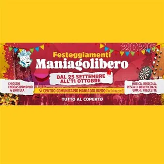

ven 25 set
Festeggiamenti Maniagolibero 2026
Torna uno degli appuntamenti più attesi dell'anno: i Festeggiamenti di Maniagolibero 2026! Dal 25 settembre all'11 ottobre ci vediamo al Centro Comunitario di Via Dalmazia 60 per tre weekend ricchi di gusto, musica, spettacoli e divertimento per tutta la famiglia. COSA TROVERAI…
 Indicazioni
Indicazioni
- Costi e prenotazioni
- Costo non indicato · Prenotazione non indicata
- Programma
- Programma da verificare. Apri la fonte ufficiale per orari e possibili aggiornamenti.
- In caso di maltempo
- Nessuna indicazione specifica pubblicata.
- Note
- Acquisito automaticamente dalla fonte.
L’EVENTO
Descrizione completa
Torna uno degli appuntamenti più attesi dell'anno: i Festeggiamenti di Maniagolibero 2026!
Dal 25 settembre all'11 ottobre ci vediamo al Centro Comunitario di Via Dalmazia 60 per tre weekend ricchi di gusto, musica, spettacoli e divertimento per tutta la famiglia.
Giochi, freccette, torneo di briscola e pesca di beneficenza
Ore 19.00 (Parcheggio Via Mazzini): Celebrazione 10° Anniversario Murales e Meridiana con momento conviviale.
Dalle 19.30: "La Lucciolata" in collaborazione con Frecce Tricolori Maniago (partenza/arrivo al Centro Comunitario) e pasta degli Alpini.
IL PROGRAMMA
Programma e orari
Appuntamenti raccolti dalle fonti elencate. Dove manca un orario, non è ancora disponibile in questa scheda.
Programma pubblicato
- Ore 19.00 (Parcheggio Via Mazzini): Celebrazione 10° Anniversario Murales e Meridiana con momento conviviale.
- Ore 19.30: Apertura chioschi e cucina.
- Ore 21.00: Hard Pop Band (Cover Pop '70/'80/'90 in chiave rock).
- Ore 19.00: Apertura chioschi e cucina.
- Ore 21.00: Absolute 5 in concerto. Prima e dopo DJ set con Julio Montana.
- Ore 09.00: Passeggiata a 4 Zampe con l'Istruttrice Giulia Piazza (gratuità su prenotazione).
- Ore 09.30: 3ª Marcia delle Contrade (7 km o 12 km) & ManiaLivri Wellness (camminata, body barre e pilates con pranzo incluso).
- Ore 12.30: PRANZO SPECIALITÀ PORCEDDU (su prenotazione al +39 370 309 0643).
- Ore 19.30: Apertura chioschi con Serata "Panini delle Contrade".
- Ore 20.00: Torneo di Briscola e Morra.
- Ore 22.00: Luciano Gaggia Showman DJ.
- Ore 19.00: Festa della Birra – 2° Livri Rocktoberfest con cucina tipica bavarese.
- Ore 21.00: Everlong (Foo Fighters Tribute Band) + DJ William e Paolo Innocenzi.
- Ore 10.30: Santa Messa con processione.
- Ore 15.30: Contrade in Sfida.
- Ore 19.00: CENA SPECIALITÀ PAELLA (su prenotazione al +39 370 309 0643).
- Ore 20.30: Straits Friends (Tributo Dire Straits) in concerto.
- Ore 20.30: No Limits Night – DJ set & Animation Dance Show.
- Ore 19.00: CENA SPECIALITÀ SARDELLATA (su prenotazione) con esperienza magica ai tavoli.
- Ore 21.00: Exes in concerto + DJ set Emistore.
- Ore 19.00: CENA CON DELITTO "Le Malizie di Bertoldo" con menù autunnale a base di zucca, coniglio, polenta e funghi (su prenotazione).
INFORMAZIONI UTILI
Prima di partire
- Controllare la fonte prima di partire.
ORGANIZZAZIONE